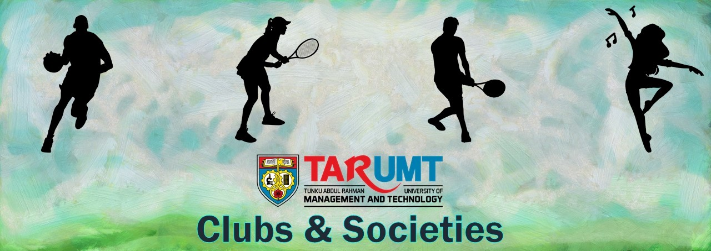

Tunku Abdul Rahman University of Management and Technology (‘TAR UMT’) was established in 1969 as TAR College with
the focus of providing tertiary education opportunities for young Malaysians regardless of race, class and creed
who were seeking quality education as well as meeting the rising demand for human capital from businesses and
industries. The College started with a single campus in Setapak, Kuala Lumpur which is now the Main Campus.
Subsequently, five branch campuses were established in Penang, Perak, Johor, Pahang and Sabah.
TAR UMT Main Campus in Kuala Lumpur sits on a piece of 171-acre land and the campus is an iconic landmark for its
architectural feat in blending historical buildings with modern structures as well as the verdant greenery.
Meanwhile, the branch campuses in Penang, Perak, Johor, Pahang and Sabah are purpose-built complete with
state-of-the-art infrastructure and facilities for learning and teaching.
TAR UMT offers programmes at pre-university, diploma, bachelor degree and postgraduate levels that are widely
recognised by the academia and industries for their depth and breadth of scope and academic rigor. Today, TAR UMT
has a student population of about 29,000 including international students from more than 20 countries enrolling in
close to 200 programmes over a wide range of disciplines from foundation to accountancy, finance, business,
economics, engineering, built environment, applied sciences, ICT as well as mass communication, creative arts,
social science and hospitality management.
These programmes are conducted by 7 faculties and 1 centre namely the Centre for Pre-University Studies, Faculty
of Accountancy, Finance and Business, Faculty of Applied Sciences, Faculty of Computing and Information
Technology, Faculty of Engineering and Technology, Faculty of Built Environment, Faculty of Communication and
Creative Industries and Faculty of Social Science and Humanities. In addition, there is also a Centre for
Postgraduate Studies and Research that focuses on research.
TAR UMT is one of the oldest institutions of higher learning in Malaysia with close to 300,000 students having
passed through its doors.
TAR UMT has won many scholastic awards and recognition amongst which include the SETARA 5-Star rating for the year
2018 / 2019 under the University Colleges category, Premier Digital Tech Institution status awarded by Malaysia
Digital Economy Corporation (‘MDEC’) in 2019 for the second time and Sin Chew Education Awards 2018 / 19 where TAR
UMT was named as the recipient of the Outstanding Educational Institutions: Private Universities / Colleges award,
Product Award and CSR award. Besides this, TAR UMT also won the Asia Pacific CSR Awards 2016 where the institution
won the Excellence in Education Improvement award.